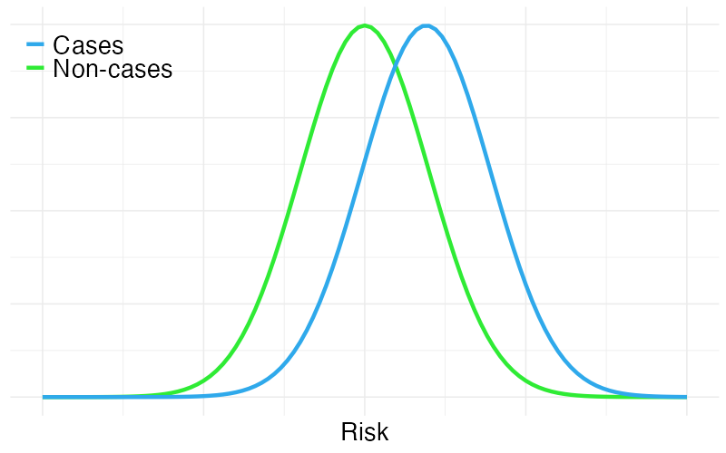
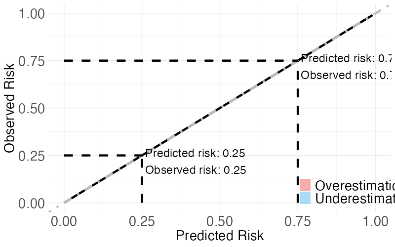

Discrimination refers to a model's ability to separate people who experience the outcome (cases) from people who do not experience the outcome of interest (non-cases). Greater separation implies better discrimination.
The AUC is one measure of discrimination. It asks the following question: suppose we randomly pick one individual who experienced the outcome from the data and one individual who did not. What is the probability that our model correctly identifies the "case", i.e. the person with a higher risk of the outcome? Hence, an AUC of 1 means that the model can always correctly identify the "case". However, obtaining an AUC of 1 is unfeasible in practice. If the model cannot distinguish between the groups (i.e. is not better than guessing randomly) the AUC is 0.5.
The figure shows how the predicted risks are distributed among cases and non-cases. Change the value of the AUC to see what this means for the separation of the groups in the figure.

Calibration refers to how well the predicted risks are aligned with the observed risks on average. For example, we would like that the observed risk is on average 0.5 among individuals with predicted risk 0.5. If this is (approximately) the case, we say that the model is well calibrated. When this is not the case, the model is said to be miscalibrated.
A calibration plot is one tool to assess calibration. In a calibration plot, predicted risks are compared to the observed percentage of people who experience the outcome (observed risk). The calibration curve can be described with an intercept and a slope. The intercept will be close to 0 and the slope will be close to 1 for a well calibrated model. The calibration curve is then a diagonal line. In presence of miscalibration, the risks are under- and/or overestimated. The curve will deviate from the diagonal line.
In the figure, change the calibration slope and intercept to see what this means for the calibration of the model. The calibration intercept and slope can be difficult to interpret simultaneously, so it is preferred to study them separately, keeping the intercept at 1 when varying the slope and keeping the slope at 0 when varying the intercept.
The calibration intercept can be seen as a measure of overall prediction bias. Keeping the slope equal to one, but changing the intercept, you will see that the risks are either under- or overestimated
The calibration slope can be thought of as a measure of how well the model captures the variability of the individual risks. Keeping the intercept at zero, but setting the slope to be larger than one you will see that the predictions are not "extreme" enough. The model tends to overestimate the risk for individuals with low risk, but underestimate the risk for individuals with high risk. If the slope is smaller than one, the predictions are too extreme. Low risks are underestimated while high risks are overestimated.
Note: the reason that the calibration curve is not necessarily a straight line is because it is computed on the log-odds (logit) scale: logit(Observed risk) ≈ Intercept + slope*logit(Predicted risk), where logit(p)=ln(p/1-p).
